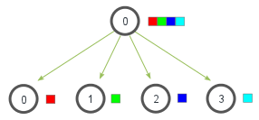
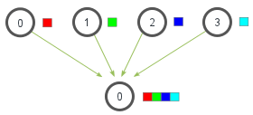

Collective Communications¶
Collective Communications A collective communication is a communication that involves a group (or groups) of processes.
the group of processes is represented as always as a communicator that provides a context for the operation,
Syntax and semantics of the collective operations are consistent with the syntax and semantics of the point-to-point operations,
For collective operations, the amount of data sent must exactly match the amount of data specified by the receiver.
Mixing type of calls Collective communication calls may use the same communicators as point-to-point communication; Any (conforming) implementation of MPI messages guarantees that calls generated on behalf of collective communication calls will not be confused with messages generated by point-to-point communication.
Broadcast, Gather and Scatter¶
The broadcast operation. In the broadcast, initially just the first process contains the data \(a_0\), but after the broadcast all processes contain it.

This is an example of a one-to-all communication, i.e., only one process contributes to the result, while all processes receive the result.
int MPI_Bcast(void* buffer, int count,
MPI_Datatype datatype, int root, MPI_Comm comm)
Broadcasts a message from the process with rank root to all
processes of the group, itself included.
void* bufferon return, the content of root’s buffer is copied to all other processes.int countsize of the messageMPI_Datatype datatypetype of thebufferint rootrankof the process broadcasting the messageMPI_Comm commcommunicator grouping the processes involved in the broadcast operation
The scatter and gather operations
In the scatter, initially just the first process contains the data \(a_0,\ldots,a_3\), but after the scatter the \(j\)th process contains the \(a_j\) data.

In the gather, initially the \(j\)th process contains the \(a_j\) data, but after the gather the first process contains the data \(a_0,\ldots,a_3\)

Each process (root process included) sends the contents of its send buffer to the root process. The latter receives the messages and stores them in rank order.
int MPI_Gather(const void* sendbuf, int sendcount, MPI_Datatype sendtype, void* recvbuf, int recvcount, MPI_Datatype recvtype, int root, MPI_Comm comm)
const void* sendbufstarting address of send bufferint sendcountnumber of elements in send bufferMPI_Datatype sendtypedata type of send buffer elementsvoid* recvbuf[address of receive buffer]{.alert}int recvcount[number of elements for any single receive]{.alert} (and [not]{.ul} the total number of items!)MPI_Datatype recvtype[data type of received buffer elements]{.alert}int rootrank of receiving processMPI_Comm commcommunicator
Observe that
The type signature of
sendcount,sendtypeon each process must be equal to the type signature ofrecvcount,recvtypeat all the processes.The amount of data sent must be equal to the amount of data received, pairwise between each process and the root.
Therefore, if we need to have a varying count of data from each process, we need to use instead
int MPI_Gatherv(const void* sendbuf, int sendcount,
MPI_Datatype sendtype, void* recvbuf,
const int recvcounts[], const int displs[],
MPI_Datatype recvtype, int root, MPI_Comm comm)
where
const int recvcounts[]is an array (of length group size) containing the number of elements that are received from each process,const int displs[]is an array (of length group size). Entryispecifies the displacement relative torecvbufat which to place the incoming data from processi.
If we need to have the result of the gather operation on every process involved in the communicator we can use the variant
int MPI_Allgather(const void* sendbuf, int sendcount,
MPI_Datatype sendtype, void* recvbuf, int recvcount,
MPI_Datatype recvtype, MPI_Comm comm)
All processes in the communicator
commreceive the result. The block of data sent from the \(j\)th process is received by every process and placed in the \(j\)th block of the bufferrecvbuf.The type signature associated with
sendcount,sendtype, at a process must be equal to the type signature associated withrecvcount,recvtypeat any other process.
This function has also the version for gathering messages with different sizes:
int MPI_Allgatherv(const void* sendbuf, int sendcount,
MPI_Datatype sendtype, void* recvbuf, const int recvcounts[],
const int displs[], MPI_Datatype recvtype, MPI_Comm comm)
and works in a way analogous to the MPI_Gatherv.
The scatter is simply the inverse operation of MPI_Gather
int MPI_Scatter(const void* sendbuf, int sendcount,
MPI_Datatype sendtype, void* recvbuf, int recvcount,
MPI_Datatype recvtype, int root, MPI_Comm comm)
const void* sendbuf[address of send buffer]{.alert}int sendcount[number of elements sent to each process]{.alert}MPI_Datatype sendtype[type of send buffer elements]{.alert}void* recvbufaddress of receive bufferint recvcountnumber of elements in receive bufferMPI_Datatype recvtypedata type of receive buffer elementsint rootrank of sending processMPI_Comm commcommunicator
Taxonomy of collective communications: Scatter Observe that
The type signature of
sendcount,sendtypeon each process must be equal to the type signature ofrecvcount,recvtypeat the root.The amount of data sent must be equal to the amount of data received, pairwise between each process and the root.
Therefore, if we need to have a varying count of data from each process, we need to use instead
int MPI_Scatterv(const void* sendbuf, const int sendcounts[],
const int displs[], MPI_Datatype sendtype, void* recvbuf,
int recvcount, MPI_Datatype recvtype, int root, MPI_Comm comm)
where
const int sendcounts[]is an array (of length group size) containing the number of elements that are sent to each process,const int displs[]is an array (of length group size). Entryispecifies the displacement relative torecvbuffrom which to take the outgoing data to processi.
Modifying the 1st derivative code¶
Modifying the 1st derivative code Let us perform the following modification to our first derivative code:
Taking from input the number of points to use in each interval,
Collecting the whole result on one process and print it on file.
For the first step we use the MPI_Bcast function,
if(mynode == 0){
if(argc != 2){
n = 20;
}else{
n = atoi(argv[1]);
}
}
MPI_Bcast(&n,1,MPI_INT,
0,MPI_COMM_WORLD);
We read on
rank\(0\) the numbernfrom command line,Then we broadcast it with
MPI_Bcast, pay attention to the fact that the broadcast operations happens on all the processes!
Modifying the 1st derivative code Then we gather all the derivatives
from the various processes and collect them on process 0.
if(mynode == 0)
globalderiv = (double *)
malloc(sizeof(double)
*(n*totalnodes));
MPI_Gather(fx,n,MPI_DOUBLE,
globalderiv,n,MPI_DOUBLE,
0,MPI_COMM_WORLD);
we allocate on
rank 0the memory that is necessary to store the whole derivative array,then we use the to gather all the array
fx(ofdouble) inside theglobalderivarray.
At last we print it out on file on rank 0
if(mynode == 0){
FILE *fptr; fptr = fopen("derivative", "w");
for(int i = 0; i < n*totalnodes; i++)
fprintf(fptr,"%f %f\n",globala+i*dx,globalderiv[i]);
fclose(fptr); free(globalderiv);}
All-to-All Scatter/Gather¶
All-to-All MPI_ALLTOALL is an extension of MPI_ALLGATHER to
the case where each process sends distinct data to each of the
receivers.
int MPI_Alltoall(const void* sendbuf, int sendcount,
MPI_Datatype sendtype, void* recvbuf, int recvcount,
MPI_Datatype recvtype, MPI_Comm comm)
The \(j\)th block sent from process \(i\) is received by process \(j\) and is placed in the \(i\)th block of
recvbuf.The type signature for
sendcount,sendtype, at a process must be equal to the type signature forrecvcount,recvtypeat any other process.
All-to-All different data size If we need to send data of different size between the processes
int MPI_Alltoallv(const void* sendbuf, const int sendcounts[],
const int sdispls[], MPI_Datatype sendtype, void* recvbuf,
const int recvcounts[], const int rdispls[],
MPI_Datatype recvtype, MPI_Comm comm);
const void* sendbufstarting address of send bufferconst int sendcounts[]array specifying the number of elements to send to each rankconst int sdispls[]entry \(j\) specifies the displacement (relative tosendbuf) from which to take the outgoing data destined for process \(j\)void* recvbufarray specifying the number of elements that can be received from each rankconst int recvcounts[]integer array. Entry \(i\) specifies the displacement (relative torecvbuf) at which to place the incoming data from process \(i\)const int rdispls[]entry \(i\) specifies the displacement (relative torecvbuf) at which to place the incoming data from process \(i\)
Global reduce operation¶
The reduce operation The reduce operation for a given operator takes a data buffer from each of the processes in the communicator group and combines it according to operator rules.
int MPI_Reduce(const void* sendbuf, void* recvbuf,
int count, MPI_Datatype datatype, MPI_Op op,
int root, MPI_Comm comm);
const void* sendbufaddress of send buffervoid* recvbufaddress of receive bufferint countnumber of elements in send bufferMPI_Datatype datatypedata type of elements of send bufferMPI_Op opreduce operationint rootrank of root processMPI_Comm commcommunicator
The reduce operation The value of MPI_Op op for the reduce
operation can be taken from any of the following operators.
Constant |
Operation |
Constant |
Operation |
|---|---|---|---|
|
Maximum |
|
Max value and location |
|
Minimum |
|
Minimum value and location |
|
Sum |
|
Logical or |
|
Product |
|
Bit-wise or |
|
Logical and |
|
Logical exclusive or |
|
Bit-wise and |
|
Bit-wise exclusive or |
Moreover, if a different operator is needed, it is possible to create it by means of the function
int MPI_Op_create(MPI_User_function* user_fn, int commute,
MPI_Op* op)
In C the prototype for a MPI_User_function is
typedef void MPI_User_function(void* invec, void* inoutvec,
int *len, MPI_Datatype *datatype);
Global reduce operation – All-Reduce As for other collective operations we may want to have the result of the reduction available on every process in a group.
The routine for obtaining such result is
int MPI_Allreduce(const void* sendbuf, void* recvbuf,
int count, MPI_Datatype datatype, MPI_Op op, MPI_Comm comm)
const void* sendbufaddress of send buffervoid* recvbufaddress of receive bufferint countnumber of elements in send bufferMPI_Datatype datatypedata type of elements of send bufferMPI_Op opreduce operationMPI_Comm commcommunicator
This instruction behaves like a combination of a reduction and broadcast operation.
Global reduce operation – All-Reduce-Scatter This is another variant of the reduction operation in which the result is scattered to all processes in a group on return.
int MPI_Reduce_scatter_block(const void* sendbuf,
void* recvbuf, int recvcount, MPI_Datatype datatype,
MPI_Op op, MPI_Comm comm);
The routine is called by all group members using the same arguments for
recvcount,datatype,opandcomm.The resulting vector is treated as
nconsecutive blocks ofrecvcountelements that are scattered to the processes of the groupcomm.The \(i\)th block is sent to process \(i\) and stored in the receive buffer defined by
recvbuf,recvcount, anddatatype.
Global reduce operation – All-Reduce-Scatter Of this function also a variant with variable block–size is available
int MPI_Reduce_scatter(const void* sendbuf, void* recvbuf,
const int recvcounts[], MPI_Datatype datatype, MPI_Op op,
MPI_Comm comm);
This routine first performs a global element-wise reduction on vectors of \(\verb|count|=\sum_{i=0}^{n-1}\verb|recevcounts[i]|\) elements in the send buffers defined by
sendbuf,countanddatatype, using the operationop, wherenis the size of the communicator.The routine is called by all group members using the same arguments for
recvcounts,datatype,opandcomm.The resulting vector is treated as
nconsecutive blocks where the number of elements of the \(i\)th block isrecvcounts[i].The \(i\)th block is sent to process \(i\) and stored in the receive buffer defined by
recvbuf,recvcounts[i]anddatatype.
Some computations using collective communications¶
Computing Integrals¶
For an integrable function \(f : [a,b] \rightarrow \mathbb{R}\) the midpoint rule (sometimes rectangle rule) is given by $\(\int_{a}^{b}f(x) dx \approx I_1 = (b-a) f\left(\frac{a+b}{2}\right),\)$
0.4 This is a very crude approximation, to make it more accurate we may break up the interval \([a,b]\) into a number \(n\) of non-overlapping subintervals \([a_k,b_k]\) such that \([a,b] = \cup_k [a_k,b_k]\), $\(I_n = \sum_{k=0}^n(b_k-a_k) f\left(\frac{a_k+b_k}{2}\right)\)$
Computing integrals with parallel midpoint quadrature rule If we want to transform this computation in a parallel computation we can adopt the following sketch:
if (mynode == 0)get number of intervals for quadraturebroadcast number of intervals to all the processes
assign the non-overlapping intervals to the processes
sum function values in the center of each interval
reduce with operator sum the integral on process 0.
As a test function for the parallel integration routine we can use
$\(f(x) = \frac{4}{1+x^2}; \qquad I = \int_{0}^{1} \frac{4}{1+x^2} dx = \pi.\)$
To evaluate the error we can use the value :
double PI25DT = 3.141592653589793238462643;
h = 1.0 / ((double) n*totalnodes);
sum = 0.0;
for (i = 1+mynode*n;
i <= n*(mynode+1);
i++){
x = h * ((double)i - 0.5);
sum += f(x);
}
mypi = h * sum;
MPI_Reduce(&mypi, &pi, 1,
MPI_DOUBLE,
MPI_SUM, 0,
MPI_COMM_WORLD);
We assume that all the intervals have the same size, thus the scaling
h = 1.0 / (double) n,We compute all the value \(x\) that are in the local process and increment the local sum,
in conclusion we perform an
MPI_Reduceto sum together all the local sums.
You can then print out the obtained value of \(\pi\) and the error with
respect to PI25DT as
if (mynode == 0){
printf("pi is approximately %.16f, Error is %e\n",
pi, fabs(pi - PI25DT));
}
Random number generation: Montecarlo type algorithms¶
Montecarlo methods are algorithms that rely on a procedure of repeated random sampling to obtain numerical results1.
0.5 A generic Montecarlo algorithm can be described by the following 4 steps
define a domain of possible samples
generate the samples from a probability distribution over such domain
perform a deterministic computation on the inputs
aggregate the results
Computing \(\pi\) Montecarlo Style We can write the parallel version of such algorithm in the following way
we divide a square in an number of parts equal to the number of processes we have,
we generate a number of random points \((x,y)\) in the area owned by each process,
we compute how many points fall in the circle
sum-reduce the number of points in the square and in the circle
divide the two numbers on process 0 to get the approximation
Computing \(\pi\) Montecarlo Style We can generate on each node the sampling on the reference square by
h = 2.0 / (double) totalnodes;
x1 = -1.0 + mynode * h;
x2 = x1 + h;
y1 = -1.0;
y2 = 1.0;
my_SqPoints = 0;
my_CiPoints = 0;
for (i = 1; i <= n; i += totalnodes){
x = rand(); x = x / RAND_MAX; x = x1 + x * (x2 - x1);
y = rand(); y = y / RAND_MAX; y = y1 + y * (y2 - y1);
my_SqPoints++;
if ( ( x*x + y*y ) <= 1.0 ) my_CiPoints++;
}
Then we perform the reduction by doing
SqPoints = 0;
CiPoints = 0;
MPI_Reduce(&my_SqPoints, &SqPoints, 1, MPI_INT, MPI_SUM, 0,
MPI_COMM_WORLD);
MPI_Reduce(&my_CiPoints, &CiPoints, 1, MPI_INT, MPI_SUM, 0,
MPI_COMM_WORLD);
and print the approximation
if (mynode == 0){
pi = 4.0 * (double)CiPoints / (double)SqPoints;
printf("Pi is approximately %.16f, Error is %e\n"
,pi, fabs(pi - PI25DT));
}
- 1
For some historical information about this idea: http://shorturl.at/mAWY8